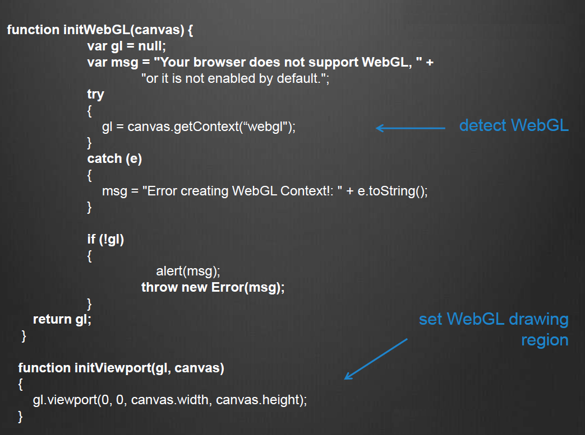
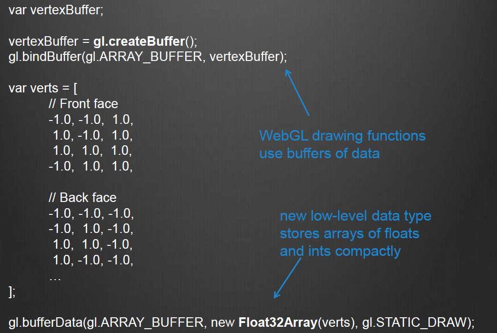

canvas, context and
viewport

Buffers and typed arrays

three.js
renderer = new THREE.WebGLRenderer( { canvas: canvas, antialias: true } );
scene = new THREE.Scene();
camera = new THREE.PerspectiveCamera( 45, canvas.width /
canvas.height, 1, 4000 );
scene.add(camera);
var light = new THREE.DirectionalLight( 0xffffff, 1.5);
scene.add( light );
var mapUrl ="../images/webgl-logo-256.jpg“;
var map = THREE.ImageUtils.loadTexture(mapUrl );
var material = new THREE.MeshPhongMaterial({ map: map });
var geometry = new THREE.CubeGeometry(2, 2, 2);
cube = new THREE.Mesh(geometry, material);
scene.add( cube );
Geometries and Materials
const ambientLight = new THREE.AmbientLight(0xffffff, 0.5);
scene.add(ambientLight);
const pointLight = new THREE.PointLight(0xffffff, 0.5);
pointLight.position.z = 100;
scene.add(pointLight);
const geometry = new THREE.TorusGeometry( 1.6, 0.8, 20, 80 );
const material = new THREE.MeshPhongMaterial( { color: 0x55eeee, shininess: 80.0} );
const mesh = new THREE.Mesh( geometry, material );
scene.add(mesh);
function render() {
mesh.rotation.x += 0.02;
mesh.rotation.y += 0.02;
requestAnimationFrame( render );
renderer.render( scene, camera );
}
render();
Examples
uniform vec2 u_resolution;
uniform vec2 u_mouse;
uniform float u_time;
void main() {
vec2 st = gl_FragCoord.xy / u_resolution.xy;
gl_FragColor = vec4(st.x, st.y, 0.0, 1.0);
}
Examples
uniform vec2 u_resolution;
uniform vec2 u_mouse;
uniform float u_time;
void main(){
vec2 st = gl_FragCoord.xy / u_resolution.xy;
vec3 color = vec3(0.0);
vec3 m_dist = vec3(0.0);
const int n = 10;
for(int i = 0; i < n; i++){
vec2 pos = random2(vec2(float(i), 0.2)) * 0.2 + 0.5;
m_dist += 1.0 / distance(st, pos);
}
color += smoothstep(0.49, 0.5, m_dist * 0.01);
gl_FragColor = vec4(color, 1.0);
}
Its fancy but where are we?